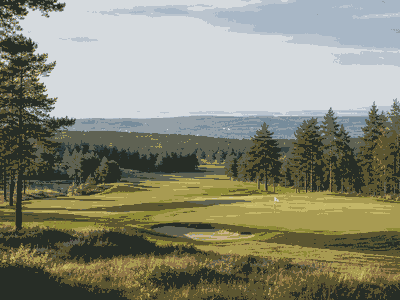
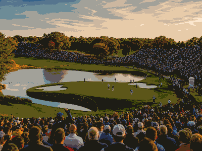

OneSliders events
All
Browse major world events by date, category and location.
Title
Year
Category
Region
Country
Level
Categories0 events
Map spreadEvents by continent
CalendarEvents per year
No events match these filters.

SportSony Open in Hawaii

SportThe American Express

SportFarmers Insurance Open

SportHilton Grand Vacations Tournament of Champions

SportLIV Golf Riyadh

SportWM Phoenix Open

SportAT&T Pebble Beach Pro-Am

SportLIV Golf Adelaide

SportGenesis Invitational

SportHonda LPGA Thailand

SportCognizant Classic

SportHSBC Women's World Championship

SportArnold Palmer Invitational

SportBlue Bay LPGA

SportLIV Golf Hong Kong

SportPuerto Rico Open

SportLIV Golf Singapore

SportThe Players Championship

SportFortinet Founders Cup

SportLIV Golf South Africa

SportValspar Championship

SportFord Championship presented by Wild Horse Pass

SportTexas Children's Houston Open

SportAramco Championship

SportValero Texas Open

SportMasters Tournament

SportJM Eagle LA Championship presented by Plastpro

SportLIV Golf Mexico City

SportRBC Heritage
SportThe Chevron Championship

SportZurich Classic of New Orleans

SportCadillac Championship

SportMexico Riviera Maya Open at Mayakoba

SportLIV Golf Virginia

SportMizuho Americas Open

SportONEflight Myrtle Beach Classic

SportTruist Championship

SportKroger Queen City Championship presented by P&G

SportPGA Championship

SportCJ Cup Byron Nelson

SportCharles Schwab Challenge

SportLIV Golf Korea

SportShopRite LPGA powered by Wakefern

SportLIV Golf Andalucia

SportMemorial Tournament

SportU.S. Women's Open presented by Ally

SportDow Championship

SportRBC Canadian Open

SportMeijer LPGA Classic for Simply Give

SportU.S. Open Golf

SportKPMG Women's PGA Championship

SportLIV Golf Louisiana

SportTravelers Championship

SportJohn Deere Classic

SportAmundi Evian Championship

SportGenesis Scottish Open

SportISCO Championship

SportCorales Puntacana Championship

SportThe Open Championship

Sport3M Open

SportISPS Handa Women's Scottish Open

SportLIV Golf UK

SportAIG Women's Open

SportRocket Classic

SportLIV Golf New York

SportWyndham Championship

SportFedEx St. Jude Championship

SportThe Standard Portland Classic

SportBMW Championship

SportCPKC Women's Open

SportLIV Golf Indianapolis

SportFM Championship

SportLIV Team Championship Michigan

SportTour Championship

SportBiltmore Championship Asheville

SportWalmart NW Arkansas Championship presented by P&G

SportBank of Utah Championship

SportLOTTE Championship presented by Hoakalei

SportBaycurrent Classic

SportBuick LPGA Shanghai

SportBMW Ladies Championship

SportButterfield Bermuda Championship

SportMaybank Championship

SportVidantaWorld Mexico Open

SportTOTO Japan Classic

SportWorld Wide Technology Championship

SportGood Good Championship

SportThe ANNIKA driven by Gainbridge at Pelican

SportCME Group Tour Championship

SportRSM Classic

SportKLPGA Oslo Ladies Open

SportRyder Cup 2027